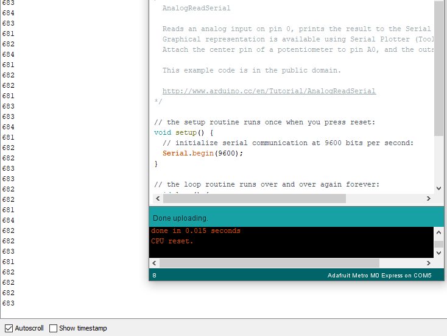

Circuits
For this section's assignment I created 3 basic circuits with the components from the kit. The first one was a simple red LED that used a 1k ohm resistor. Then, using the arduino IDE software, I applied a default blink effect but reduced the time between blinks.
The next circuit measured the variable voltage of a potentiometer. This also used a basic preset from the arduino software. The output was sent to a serial monitor and was displayed as a number from 0 to 1023, or the maximum for a 10-bit number.

I wanted to use one of the motors for the third circuit, so I connected the motor to the microcontroller through the breadboard. It did not work well with any resistors, so I applied a full 3.3 volts.